AI Academy · Level 1 · Grade 6 · Week 17 · Student lesson
Prediction Is Not Fact
Learn to understand, design, build, test and explain AI systems responsibly.
Project: Helpful Classroom Sorter
Before you start
Week 15: keep predictions separate from evidence used to judge them.
Plan time to read, investigate and explain. Keep predictions separate from observations.
Student lesson · 1 of 17
Your mission
Your learning target
I can separate a recorded prediction from the observation used to check it.
I can compare matching cases using a stated outcome rule and preserve unresolved evidence.
I can report checked results without counting missing observations as successes or failures.
Remember before reading
Close your notes first. A rough first answer helps us choose the right starting point; it is not a score for your ability.
Without opening the old lesson, explain one key idea from Boundaries and 'Not Sure'. Give an example and a mistake that the idea helps you avoid.
Without opening the old lesson, explain one key idea from Build a Human Classifier. Give an example and a mistake that the idea helps you avoid.
Without opening the old lesson, explain one key idea from Repeating Efficiently. Give an example and a mistake that the idea helps you avoid.
After trying, check the relevant lesson or ask your teacher. Change the part of your explanation that the evidence shows was wrong.
A prediction is a fallible output supported by clues.
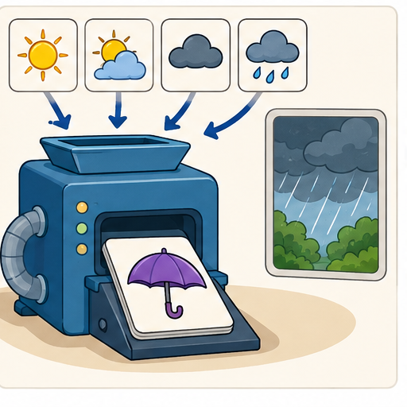
Learner name:
Readiness for the connected explanation
A model predicts far, but the distance record is unreadable. Can this case be called correct? What evidence would let you check it?
This week’s end goal
By the end, I can keep predicted and observed outcomes separate and audit a disagreement.
Student lesson · 2 of 17
Notice the evidence
PICTURE STORY
Look Closely Before You Explain
Pictures give clues; evidence tells us what the clues mean.

What do you notice?
Name three visible details without explaining them yet.
Circle the detail most connected to the system's decision.
Name one detail that may be decoration or distraction.
Make a first prediction and state the clue that supports it.
My observations, prediction, and evidence:
A closer explanation
A prediction states what a model outputs. An observation records what was measured or happened. To check a prediction, keep both records and compare the same case under the same outcome rule. Writing a prediction into the observation column would make the check circular.
Use a fictional ramp investigation. Before each trial, Ramp1 predicts far for a ramp height of at least 6 cm and near otherwise. Its allowed heights are whole centimetres from 1 through 10. After a toy rolls, a learner measures its travel distance. The outcome rule is far for a distance of at least 4 floor units and near otherwise. Ramp height and travel distance are different quantities.
The values in this lesson are invented practice records, not a physical law about ramps. Ramp1 is a fixed paper model for learning how to check predictions. Each trial has an ID so that its height, prediction and later measurement stay together. Keep the model version and record the prediction before opening the observation card.
Student lesson · 3 of 17
See how it works
VISUAL MECHANISM
Input → Process → Output
Follow the information instead of imagining magic inside the machine.
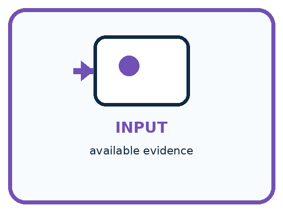
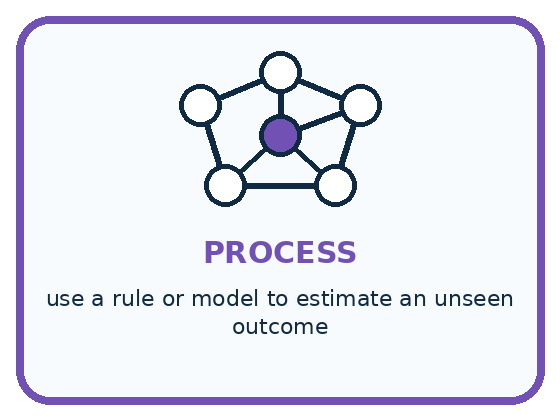
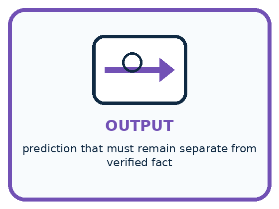
INPUT available evidence
PROCESS use a rule or model to estimate an unseen outcome
OUTPUT prediction that must remain separate from verified fact
Draw a fresh example with all three stages:
A closer explanation
Two records meet at a comparison
For B, the input 6 cm produces the prediction far. The later distance of 3 units produces the observed category near. This is a mismatch. Retain far as the original prediction and near as the observed category. Changing the old prediction to near would hide the mistake rather than improve the original result.
For A and C, the categories match. These two matches provide evidence about these trials. They do not show that every future prediction will be correct. Even a correctly computed prediction can disagree with an observation because following the model rule and matching the world are different checks.
Connect the picture and the explanation
Point to the input, the deciding step and the result in this week’s visual. Explain the same step in ordinary words. A picture helps when you can say what each part represents.
Student lesson · 4 of 17
Compare the cases
PICTURE GALLERY
Four Cases, Four Clues
Use the visual cue, then read the evidence carefully.
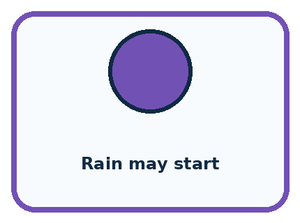
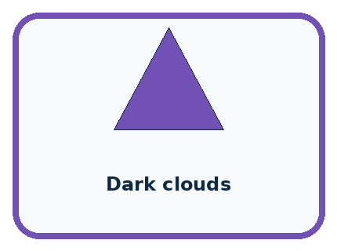
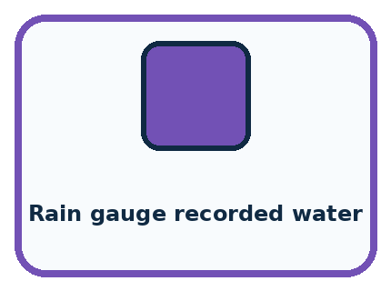
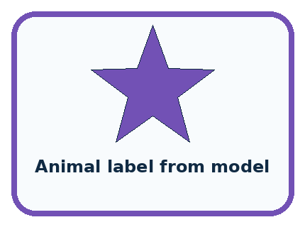
CASE 1 — Rain may start Clue: forecast output. Meaning: prediction.
CASE 2 — Dark clouds Clue: observed condition. Meaning: evidence.
CASE 3 — Rain gauge recorded water Clue: later measurement. Meaning: fact for evaluation.
CASE 4 — Animal label from model Clue: unverified output. Meaning: prediction, not fact.
Which two pictures are easiest to confuse? What evidence separates them?
Change one thing in the pictured case
Change: Keep score 4 but measure exactly 8 minutes.
Prediction: The observed label becomes quick and agrees with the prediction.
Reason: Above 8 is strict: equality is quick under this policy.
Student lesson · 5 of 17
Words that unlock the idea
VOCABULARY
Words You Can See and Use
The badge is a memory cue; the definition does the real thinking work.
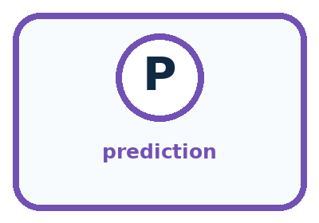
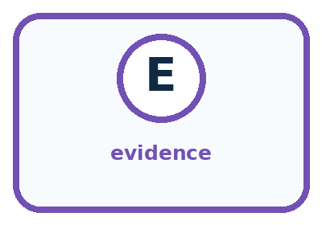
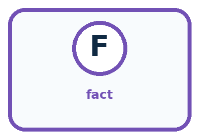
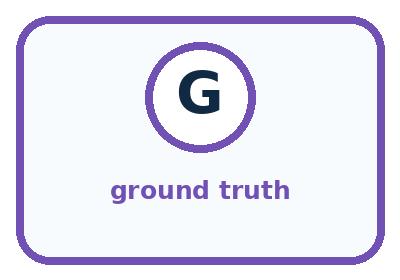
| Word | Meaning | My example |
|---|---|---|
| prediction | estimate about an unknown outcome | |
| evidence | information that supports or challenges a claim | |
| fact | claim established by direct or reliable checking | |
| ground truth | reference outcome used to evaluate a prediction |
Misconception detective
CLAIM TO REPAIR A confident prediction is a fact.
Use one vocabulary word and one piece of evidence to repair it:
Words used in the closer explanation
| Word | Meaning |
|---|---|
| Observation | A recorded measurement or event used as evidence |
| Outcome rule | The agreed method for turning observed evidence into the category being checked |
| Mismatch | A prediction that differs from an established comparison outcome |
| Unassessed | A case whose prediction has not yet been judged against adequate outcome evidence |
Student lesson · 6 of 17
Follow a worked example
WORKED EXAMPLE
Watch the Reasoning, Not Just the Answer
Every step connects a claim to observable evidence.

STEP 1 — OBSERVE available evidence
STEP 2 — TRACE use a rule or model to estimate an unseen outcome
STEP 3 — CONCLUDE prediction that must remain separate from verified fact
What new evidence could change this answer?
A closer explanation
| Record | Evidence available | Status under the outcome rule |
|---|---|---|
| D: height 5 cm; predicts near | Distance missing | Unassessed; request the trial record |
| E: height 7 cm; predicts far | Two records say 3 and 4 units | Unassessed; investigate the conflict |
| F: height 6 cm; predicts far | Verified distance exactly 4 units | Match; at least 4 includes 4 |
For E, 3 units means near and 4 units means far. The disagreement can change the judgment. Check the trial ID, original measurement and recording procedure. Do not choose the distance that makes Ramp1 look better. If the conflict cannot be resolved, retain both reports and mark the comparison unassessed.
An observation is evidence, not an automatic guarantee of truth. A wrong trial ID, unclear unit or copying error can make the comparison unreliable. If a supported correction is made, retain the original entry, the correction, its source and the reason. Remeasuring a new trial does not reveal what happened in the old one.
Learn from the worked case
Cover the result before checking it. Say what is given, choose the procedure, and follow one step at a time. Then uncover the result and explain your first mismatch. Ask why a step is allowed, not only what number it produces.
A pictorial worked case: Prediction Is Not Fact
A fictional drying trial uses a fixed rule and later measures what actually happened.
The facts we will use
Model D predicts slow when moisture score is at least 5; quick otherwise.
Observation policy: slow if drying takes above 8 minutes; quick otherwise. Trial T has score 4 and measured time 9 minutes.

Read the picture one step at a time
Why this result follows
The moisture score generates a prediction; it is not the observed drying time. The later measurement supplies separate evidence under the stated observation policy. Save both values and their units. Altering the recorded time to match D would destroy the evaluation rather than repair the model.
What this example does not establish
One failure does not prove every prediction is wrong; one agreement does not establish reliability on future trials.
Read the labelled picture: Which field changes the observation label, and which field changes the model prediction?
Change one thing: Keep score 4 but measure exactly 8 minutes. Predict the result before checking the explanation. What remains the same?
Student lesson · 7 of 17
Find and repair a mistake
COMPARE
Same Result, Different Reason
A comparison helps reveal the true concept boundary.
| Case | Evidence | What it shows |
|---|---|---|
| Rain may start | forecast output | prediction |
| Dark clouds | observed condition | evidence |
| Rain gauge recorded water | later measurement | fact for evaluation |
| Animal label from model | unverified output | prediction, not fact |
Repair two tempting claims
CLAIM A A confident prediction is a fact.
Repair:
CLAIM B Evidence and prediction are two words for the same thing.
Repair:
A closer explanation
Start a mismatch investigation by checking the input, trial ID, prediction calculation and observation procedure. A mismatch alone does not identify which part caused the problem. If all records are sound, this case is evidence that the model prediction did not match the outcome.
If you revise the model after seeing B, record a new version. A new prediction for B can help explain the change, but it is no longer a check on an unseen case. Preserve Ramp1’s result and use new reserved trials to evaluate the revised version, following Week 15’s method.
Student lesson · 8 of 17
Practise together
GUIDED PRACTICE
Try It, Check It, Explain It
Use support now so you can succeed independently later.

Explain how the picture story demonstrates this idea: A prediction is a fallible output supported by clues.
Use a fresh example to explain prediction.
Trace a new input → process → output example.
Find and repair the error in: Evidence and prediction are two words for the same thing.
Invent one edge case and name the safe response.
A closer explanation
Consider only trials A through E. Three have established outcomes: A, B and C. Two of those three predictions match and one does not. D and E are unassessed. Report two matches out of three assessed trials, with two more trials unassessed. Do not report four successes by treating the unknowns as correct, or two out of five as if every trial had a known outcome.
The missing cases might be different from the checked cases. The result describes the assessed group; it does not settle performance on all five or on future trials. Collect the missing evidence where possible, document what remains unknown, and keep the original model version visible. Week 23 will develop performance fractions more fully.
Practise with less help: Check a boundary without changing the rule
Use workbook W2 for the connected example “Predictions and observations”. First fill the input and rule boxes. Try the middle steps before asking for a hint. After a hint, try the next step yourself.
| Plan | Do | Check |
|---|---|---|
| What is given? Which rule or procedure applies? | Record each intermediate step. | Does the result follow? What remains unknown? |
Explain your trace to a partner. Your partner points to one step to check. Swap roles on the next case. Each person writes their own explanation.
Check your reasoning
Use the worked case for Predictions and observations. Proposed explanation: “Running the rule correctly proves the prediction correct”. Decide whether this explanation is supported. Point to the step or supplied fact that decides; explain your repair if needed.
Answer on your own before discussion. If you are unsure, say which step you need help with.
Explain the picture
Which field changes the observation label, and which field changes the model prediction?
This is supported practice. Keep the separately named independent case for an attempt before feedback.
Student lesson · 9 of 17
Run the investigation
EXPLORER LAB
Prediction-Evidence-Fact Sort
Predict first, test honestly, and explain what the evidence means.

State your prediction before the result is known.
Complete the task: Separate prediction, evidence, and fact in four scenarios.
Keep a normal case and an edge case clearly separated.
Record what happened—even when it does not match your prediction.
Explain the result, one limitation, and the next useful test.
| Case | Prediction | Observed result | What it means |
|---|---|---|---|
| Normal | |||
| Edge |
Plan → try → check
Before trying: what do I expect, and why? While trying: which step could first go wrong? Afterwards: what did I actually observe, and what should change? Keep “not run” if you only traced the procedure.
Student lesson · 10 of 17
Build your understanding
PRACTICE LADDER
Climb from Recall to Defense
Each step asks for a stronger kind of understanding.

RECALL Define prediction.
EXPLAIN A prediction is a fallible output supported by clues.
TRACE Show the input, process, and output.
DIAGNOSE Repair: A confident prediction is a fact.
TRANSFER Apply the idea to a new home or classroom case.
CREATE Design one revealing test.
DEFEND Give a claim, evidence, mechanism, limit, and safe action.
Student lesson · 11 of 17
Connect your project
PROJECT
Helpful Classroom Sorter
Build one coherent system across the year, one evidence-based decision at a time.

What real classroom need does this serve?
What information is necessary—and what should stay private?
What happens inside the process?
What normal and edge cases will you test?
When should it say not sure or ask a person?

My project decision:
Evidence for your project
In sorter trials, record predicted categories before collecting reference evidence, then retain disagreements for investigation.
Student lesson · 12 of 17
Show what you know
MASTERY
Fresh-Case Independent Proof
Complete this after teaching and guided practice have ended.

□ Name or draw the fresh case.
□ Trace input, process, and output.
□ State the conclusion and strongest evidence.
□ Name one limit, failure, missing clue, or fairness/privacy concern.
□ Explain one safe next action or improvement.
Independent evidence:
My level: □ Not yet □ With one hint □ Independently □ I can teach it
Student lesson · 13 of 17
Study a complete case
Week 17 Worked case
Use the supplied details to practise the weekly concept before attempting the independent question. This case extends the illustrated lesson.
The situation
A weather helper predicts tomorrow's rain.
The question
Is this a fact about tomorrow? How can it be checked?
Worked explanation
It is a prediction. Record it now and compare with a predefined rain observation tomorrow. Useful predictions are not guarantees.
Explain it in your own words
Which detail supports the answer, and why does it matter?
Trace the supplied case visually
A prediction becomes checkable evidence
| Evidence or stage | Value or result |
|---|---|
| Today | Record tomorrow's rain prediction |
| Tomorrow | Observe using an agreed rain rule |
| Compare | Prediction versus observation |
A weather helper predicts tomorrow's rain.
Is this a fact about tomorrow? How can it be checked?
It is a prediction. Record it now and compare with a predefined rain observation tomorrow. Useful predictions are not guarantees.
Student lesson · 14 of 17
Try a new case independently
Independent case: Transfer the check to drying predictions
In a fictional paper test, Dry1 predicts slow for a moisture score of at least 7, quick otherwise. Allowed scores are whole numbers 1 through 10. The observed outcome is slow if drying time is greater than 10 minutes, quick otherwise. Records are P: score 6, time 12; Q: score 7, time 10; R: score 9, time 14; S: score 5, time missing. Record all predictions, observed categories and comparison statuses. Summarise matches out of assessed cases, name the unassessed count, and limit the conclusion.
Attempt this case before feedback. Record any help. Earlier examples below are further practice; a case already practised with feedback cannot establish fresh transfer.
Week 17 Independent application
Close the worked explanation. Apply the idea to this different question without copying.
A model predicts rain tomorrow. Tomorrow is dry. Was the prediction an observation of tomorrow? Explain what new evidence settles the result.
My answer, with a trace, calculation or supporting evidence
Create and test
Change one relevant detail. Predict the result before testing. Include a boundary or missing-information case when it helps reveal a limit.
My changed input and expected result
Connect to your project
Label the sorter's suggested bin as a prediction until a human confirms the final placement.
The evidence I will keep
Your teacher has the independent answer and scoring criteria. Complete the matching workbook week to keep your practice evidence together.
Transfer practice from the original programme
On Monday a team predicts 'rain on Tuesday'. On Tuesday they count a damp playground as success, although sprinklers ran. Write an observation rule that could have been agreed before Tuesday.
Use feedback to improve
Attempt the independent case before hints. Record whether you worked alone, used a hint or followed a model. After feedback, fix the first unsupported step and explain why it changed. A later check uses a changed case, not a copied answer.
Student lesson · 15 of 17
Your lesson route
Start with this question: A fictional drying trial uses a fixed rule and later measures what actually happened.
| By the end, I can | How I will show it |
|---|---|
| Separate a recorded prediction from the observation used to check it | Explain the deciding step, show a trace or test, and state one limit. |
| Compare matching cases using a stated outcome rule and preserve unresolved evidence | Explain the deciding step, show a trace or test, and state one limit. |
| Report checked results without counting missing observations as successes or failures | Explain the deciding step, show a trace or test, and state one limit. |
Remember → watch and explain → try with help → investigate → try independently → keep project evidence. Your teacher may spread this lesson across several classes.
Keep your first prediction. Compare it with what the evidence shows and explain any change.
Student lesson · 16 of 17
Finish and return
Close your notes. Explain this goal in your own words: Separate a recorded prediction from the observation used to check it
If you are unsure, return to the worked picture and explain one arrow. If you are ready, change an input or assumption and justify your prediction.
Save your workbook evidence. At the next review, try a different case before opening your old answer.
Student lesson · 17 of 17
Supported practice, repair and portfolio
Use this supported practice once, in the browser or on paper. Keep the reserved independent assessment for a separate first attempt before teacher feedback.
A fictional drying trial uses a fixed rule and later measures what actually happened.
Practice 1: explain the deciding evidence
Which labelled step matches this detail? Prediction quick disagrees with observation slow.
1. Predict
2. Compare evidence
3. Observe later
4. Prediction input
Hint if needed: Read the steps in the pictorial case. Match the supplied detail to the stage that performs or records it.
After your attempt, compare with the supported explanation: Compare evidence Prediction quick disagrees with observation slow. The moisture score generates a prediction; it is not the observed drying time. The later measurement supplies separate evidence under the stated observation policy. Save both values and their units. Altering the recorded time to match D would destroy the evaluation rather than repair the model.
Practice 2: explain the deciding evidence
Changed-case practice: Keep score 4 but measure exactly 8 minutes. Which conclusion is supported by the supplied facts?
1. The observed label becomes quick and agrees with the prediction.
2. We can decide the result without examining the changed input or the procedure.
3. This one example guarantees correct results for every future input.
Hint if needed: Use the changed condition and the deciding step in the pictorial trace. The answer must say what follows from those facts.
After your attempt, compare with the supported explanation: The observed label becomes quick and agrees with the prediction. Above 8 is strict: equality is quick under this policy.
Repair a missing building block
Review Boundaries and 'Not Sure' (ai-1/16). Goal: Identify a specific source of uncertainty and explain how it affects a prediction. Short practice: Which original block needs a better width before accepting or rejecting it? What should the reviewer do?. Return to this week and explain what you changed.
Review Build a Human Classifier (ai-1/14). Goal: Construct a classifier with a stated input format, selected rule and recorded output. Short practice: Trace 0 cm and explain why clarification is different from predicting short.. Return to this week and explain what you changed.
Review Repeating Efficiently (ai-1/11). Goal: Trace a loop by testing its condition before every repetition. Short practice: Trace a fresh start of 9. How many additions occur, and must the report equal 10?. Return to this week and explain what you changed.
Keep your completed work
Use Download completed work in the hosted lesson to export your answers, reflections, practice feedback and code-run evidence. Open the HTML copy to read or print it. Drafts stay in this browser when storage is available; clear drafts on a shared device.